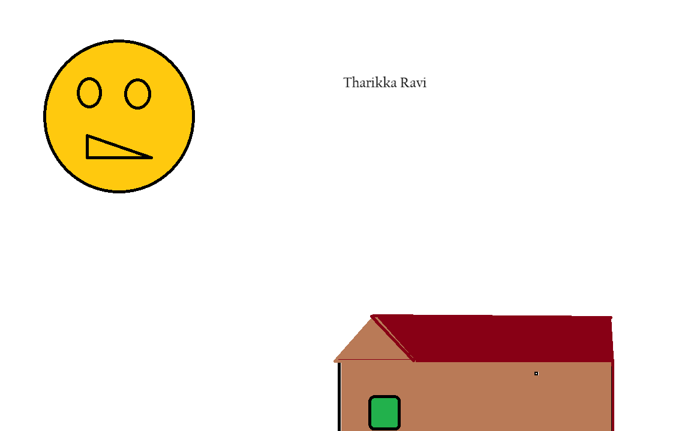

While completing this assignment, I learned how to add raster and vector images, embed audio and video files, and include YouTube videos in a web page. These skills will help me create more interactive and engaging websites in the future.